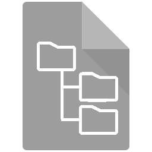

File Types
| 0 | .arc (Archive, contains: UI Files, skinpack PNGs, Structures, and in-game text) |
|
| 1 | .png (format used for all game textures) |
|
| 2 | .txt (used for texture animations) |
|
| 3 | .ttf (font files) |
|
| 4 | .xml (used for defining minigame behaviour) |
|
| 5 | .bin (used to define product codes, models, mob behaviour, or mob texture materials) |
|
| 6 | .col (used to define colours of blocks and environments) |
|
| 7 | .binka (Game sounds made with BinkAudio) |
|
| 8 | .pck (Used for game texture packs and skin packs, contain file pertaining to these) |
|
| 9 | .mcs (World files, used for entire worlds(tutorials/mashup maps) or schematics to import(battle maps take place in the same world)) |
|
| 10 | .grf (gameRulesFile used for determining things like boundaries to keep players in for maps like battle, cloud height, items the player starts with, and special items that give messages when picked up) |
|
| 11 | .msscmp (MilesSoundSystemCompressed files are used for in-game sounds, contain every sound in the game in 1fc format, otherwise known as .binka format) |
|
| 12 | .fui (FourjUserInterface files are used to declare game GUIs, such as the menu that's pulled up, the location of it, as well as the scale and visability of each item, also contains graphic images for GUIs) |
|
| 13 |  |
[noExtension] (These are .NBT files that aren't expressed with an extension, these are used for structures ingame such as mansion parts, ruins, end city parts, and even coral formations) |
| 14 | .loc (used to declare game strings, such as skin names and item names in different languages) |